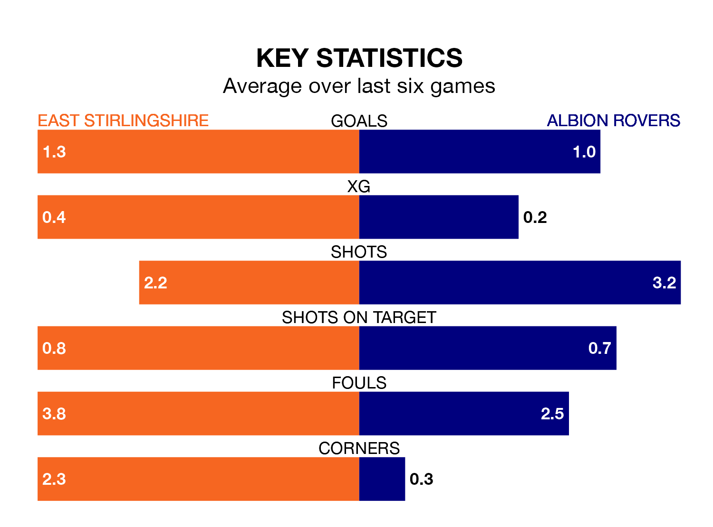

East Stirlingshire host Albion Rovers in Saturday's match at the Falkirk Community Stadium looking to bounce back from defeat last time out in Highland and Lowland Football Leagues.
The Shire, who sit zero in the league after 18 games, fell to a 1-0 away defeat to Stirling University on December 9.
They face an Albion side who picked up a win in their last match, a 2-0 victory against Edinburgh University, and who sit zero in the table.
East Stirlingshire are in bad form in Highland and Lowland Football Leagues, with one win and five losses from their last six games.
With three wins and three draws over that period, Albion's form is much better – they have taken 12 points from 18, compared to the Shire's three.
In the last 10 years, East Stirlingshire and Albion have played each other on seven occasions. East Stirlingshire won two of them, Albion four, and they drew once.
On average, the Shire scored 1.1 goals and the Wee Rovers 2.3 in those matches.
Their last meeting was on August 26, when Albion won 3-1 at home.
With 24 goals in 18 games so far this season, the home team are the league's joint-zero-lowest scorers with 1.3 goals per game. And they are conceding more than average, letting in 33 goals at a rate of 1.8 per game.
Rovers are also below average scorers, with 1.4 goals per game, compared to a league average of 1.7. They have conceded 0.9 goals per game.
